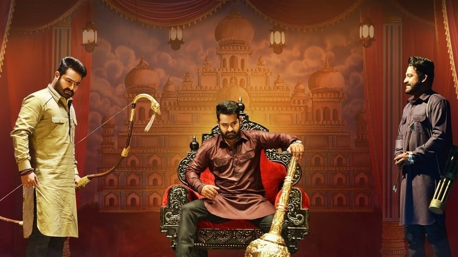

My name is Sravan Satish Jasti. I have completed my bachelors in Computer Science
at Narasaraopet Engineering College and secured 7.91 CGPA on scale of 10.
The film follows identical triplets, Jai, Lava and Kusa, who get separated at a young age and follow different paths in life. Jai becomes an evil criminal, Kusa becomes a small-time crook and Lava becomes a bank manager. Jai, the eldest of identical triplets was sidelined at a very young age due to stammering. I like this movie because it makes me more emotional while watching it.
